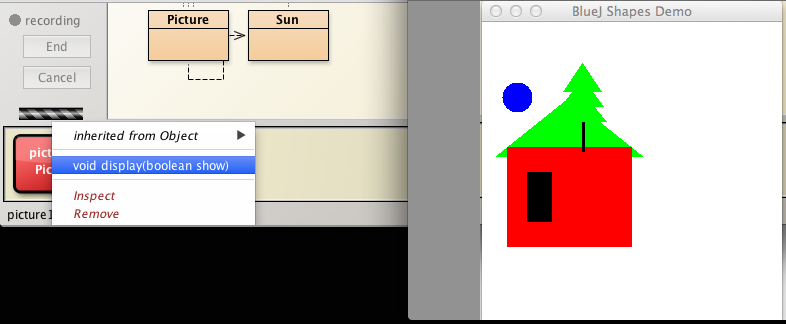
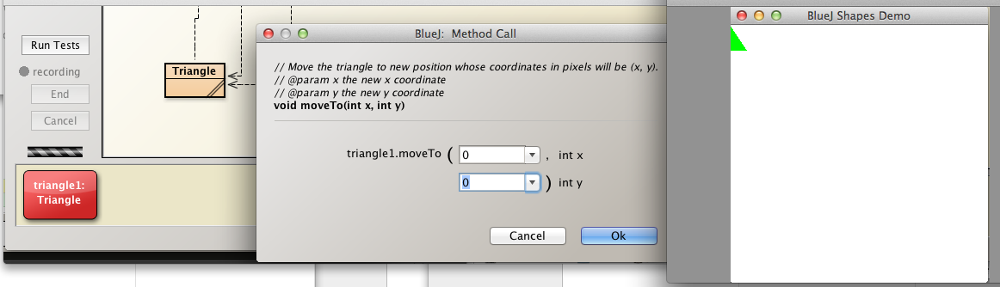
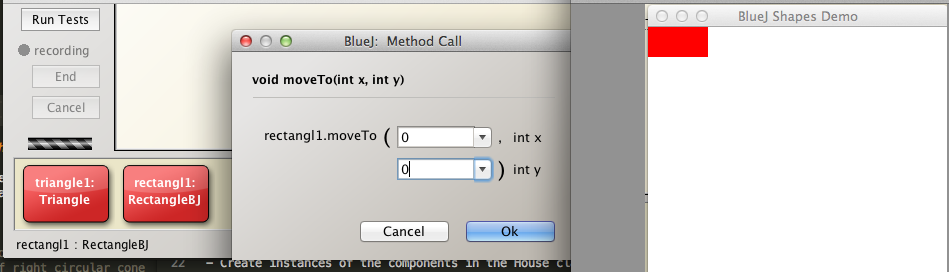
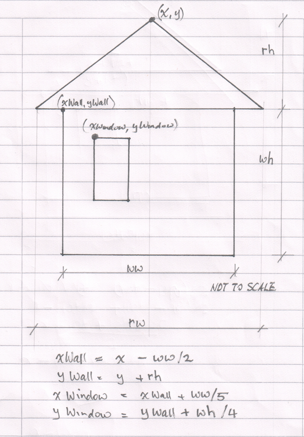
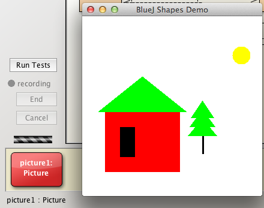

These are the solutions to the exercises set in the lab relating to shapes.
The Rectangle class is a refactored version of the BlueJ Square class.
The solution has commented only selectd parts of the class Rectangle.
package tests;
import java.awt.*;
/**
* @file Rectangle.java
* @brief This class describes a rectangle and includes
* methods to change rectangle object size and appearance.
* @version 1.2 April 1, 2014
* @author Michael Kolling and David J. Barnes
* @author <your name here>
*/
public class Rectangle
{
private int xSideLength;
private int ySideLength;
private int xPosition;
private int yPosition;
private String color;
private boolean isVisible;
/**
* Constructs a new Rectangle defined by default data
*/
public Rectangle()
{
isVisible = false;
// setState (xSideLength, ySideLength, xPosition, yPosition, color)
setState(60, 30, 60, 50, "red");
}
/**
* Constructs a new Rectangle defined by user-supplied parameters
* @param xSideLength the length of the rectangle
* @param ySideLength the width or height of the rectangle
* @param xPosition the x-coordinate of the top left corner of the rectangle
* @param yPosition the y-coordinate of the top left corner of the rectanglep
* @param color the colour of the rectangle including perimeter and body
*/
public Rectangle(int xSideLength, int ySideLength, int xPosition, int yPosition, String color)
{
setState(xSideLength, ySideLength, xPosition, yPosition, color);
}
/**
* Public method to facilitate initialization or re-initialization of the rectangle
* @param xSideLength the length of the rectangle
* @param ySideLength the width or height of the rectangle
* @param xPosition the x-coordinate of the top left corner of the rectangle
* @param yPosition the y-coordinate of the top left corner of the rectanglep
* @param color the colour of the rectangle including perimeter and body
*/
public void setState(int xSideLength, int ySideLength, int xPosition, int yPosition, String color)
{
this.xSideLength = xSideLength;
this.ySideLength = ySideLength;
this.xPosition = xPosition;
this.yPosition = yPosition;
this.color = color;
isVisible = true;
}
// and so on
...
...
}Create a Picture class
Open the shapes project that you have been working on to complete labs to this point: this should be located in workspaceBlueJ/labs/session03.
This class will facilitate rendering of the house, sun and tree objects that were manually assembled into a picture in the earlier sections of the session.
The class to contain these fields:
We first create Sun class.
This is easy since the Circle class contains all the fields and behaviour we require.
In fact we could simply replace the Sun field with a Circle field.
However, we will adhere strictly to the specification.
Here is the Sun class code.
public class Sun
{
Circle sun;
public Sun()
{
sun = new Circle();
}
}We will also add a method to display the sun:
public void display(boolean show)
{
if(show)
{
sun.makeVisible();
}
else
{
sun.makeInvisible();
}
}Here is the source code for a Picture class that
public class Picture
{
private House house;
private Tree tree;
private Sun sun;
public Picture()
{
house = new House();
tree = new Tree();
sun = new Sun();
}
public void display(boolean show)
{
if(show)
{
house.display(true);
tree.display(true);
sun.display(true);
}
else
{
house.display(false);
tree.display(false);
sun.display(false);
}
}
}Conduct a preliminary test as follows:

Note the color of the sun is blue. We will now change this to the more realistic colour yellow.
Where should we place the code to do this?
public Sun()
{
sun = new Circle();
changeColor("yellow");
}
public void changeColor(String color)
{
sun.changeColor(color);
}Observe that Circle sun.changeColor is invoking the existing method changeColor in the Circle class.
Once you have written the code to move the house you will be in a position to programmatically arrange the picture components in a reasonable layout.
Refactor the House class as follows:
Many different approaches are possible in providing a solution to this problem.
The approach adopted here is summarised as follows:
Create an instance of Triangle using the default constructor and move it to the origin (0,0).

Create an instance of Rectangle using the default constructor and move it to the origin (0,0).

Refer to Figure 3. This drawing contains the coordinates of the top left corners of the wall and window relative to the apex of the roof.
We simply invoke the moveTo methods of the individual components using these coordinates.
Here is the source code:
public void moveTo(int x, int y)
{
int xWall = x - wall.getWidth()/2;
int yWall = y + roof.getHeight();
int xWindow = xWall + wall.getWidth()/5;
int yWindow = yWall + wall.getHeight()/4;
roof.moveTo(x,y);
wall.moveTo(xWall, yWall);
window.moveTo(xWindow, yWindow);
}It may also prove necessary to write getters for the rectangle and triangle fields, something you will have had ample experience of at this point.

Finally, although not specifically requested, here is a method to move the Picture components into reasonable positions.
private void position()
{
int xRoof = 100;
int yRoof = 100;
house.moveTo(xRoof, yRoof);
tree.moveTo(xRoof + 100, yRoof + 100);
sun.moveTo(xRoof + 150, yRoof - 50);
}Invoke this within the constructor which then becomes:
public Picture()
{
house = new House();
tree = new Tree();
sun = new Sun();
this.position();
}A moveTo method will be required in Sun: here is the source:
public void moveTo(int x, int y)
{
sun.moveTo(x, y);
}Instantiate a Picture object. The result is displayed in Figure 4.

A project that includes a completed set of classes, including Picture and House is available to download from here